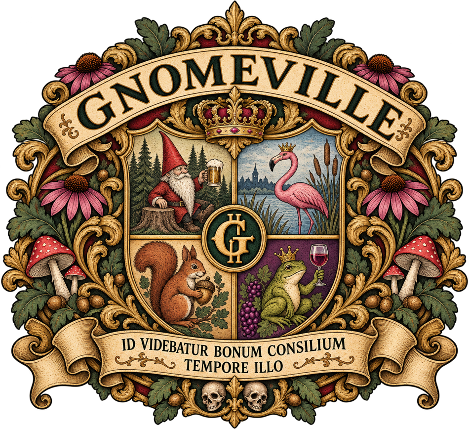

Office of the Mayor
Municipal administration, proclamations, and matters requiring official attention.
Visit the Mayor’s Office →A thriving community of distinguished residents, beloved local businesses, spirited public debate, and a municipal government doing its very best.
Visit Gnomeville. Lower your expectations. Raise your spirits.
Explore the Municipality ↓Welcome to Gnomeville, a community founded upon cooperation, mutual respect, and the belief that most disagreements can be resolved through reasonable discussion.
I remain confident that the matters currently before the municipality will be resolved in due course.
Mayor Thimblewick
Office of the Mayor
Municipal administration, proclamations, and matters requiring official attention.
Visit the Mayor’s Office →Officers Benson and Stabler are dedicated to keeping the peace, wherever it may have gone.
Visit the Police Department →Local reporting, civic announcements, and matters of significant neighborhood concern.
Online service forms and departmental pages are being prepared. The Public Library is now accepting digital visitors.
A warm welcome and a comfortable stay in the heart of Gnomeville.
Gnomeville's GentleGnomes club. Local entertainment with a certain flair.
Your gateway to GnoTube, GnomeMail, NutHub, GMZ, Twisted Sisters Café, and the Rook Report. Search responsibly. Results may vary.

The Great Seal embodies the municipality's enduring commitment to fellowship, prosperity, civic responsibility, and the orderly administration of public affairs.
Its Latin motto, Id videbatur bonum consilium tempore illo, means “It seemed like a good idea at the time.”
The precise circumstances surrounding its adoption remain the subject of ongoing archival review.
Gnomeville's digital offices are opening in stages. Additional departments, businesses, public records, and entirely necessary announcements will appear here soon.
Residents are reminded: An election result does not necessarily establish that the office in question exists.